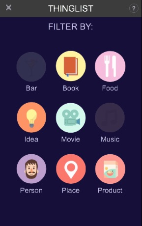

<!-- Custom Theme CSS -->
<style type="text/css">
.demo.gl_ui {
  padding: 0 20px;
} 

.demo.gl_ui .intro-col.double {
  height: 650px;
}
</style>


<article class="head_intro gl_ui">
  <section>
    <h1>GL UI<small>, for responsives HTML UIs</small></h1>
    The GL UI toolkit, is a study about how to implement responsives HTML UIs using WebGL.

  </section>
  <section>
    </img>
    </img>
  </section>

  <section id="intro_menu">
      <ul>
        <li class="hidden-phone">
          <a href="https://github.com/dthevenin/glUI" target="_" class="link-active"><i class="fa fa-github"></i>&nbsp;&nbsp;<span>Git</span></a>
        </li>
      </ul>
  </section>
</article>

<article>
  <section>
    Designing a responsive HTML UI with nice animations and that can run with the same performance on almost all devices, is still a big challenge. From my perspective the main problems are:
    <p>
      <li>The HTML DOM does not fit with some UI development requirements
      <li>The developer have a very poor control on how / when the rendering will be done
      <li>The rendering performances still depend a lot on the vendor, specially on Android Devices (but that’s changing)
    </p>

    The idea of this study is to create a UI Engine based on WebGL.
  </section>

  <section>
    <h4>Why a new UI Engine:</h4>
    <p>
      <li>This toolkit will propose a DOM with a better API for UI development
      <li>Because we control the rendering process, the UI Engine will offer to the developer all methods he need to know what happening. For instance methods such as viewDidRender, animationWillStart, animationDidEnd, animationDidStop, etc.
    </p>
  </section>

  <section>
    <h4>Why WebGL:</h4>
      <p>
        <li>WebGL become more and more popular and it’s quite well supported on most of devices.
        <li>WebGL is a low level and fast graphic API. It offers all mechanism and flexibility for implementing fast and efficient algorithms
      </p>

    I’ve written some notes that explain this engine (it’s quite draft and does not explain everything) on <a href="https://docs.google.com/document/d/1-oTpZB6QdNt53hslE1CBFRRnhcHSRgvntf0ELUV0fC4/edit?usp=sharing">Google Doc.</a>
  </section>
  <hr/>
</article>

<article class="demo gl_ui hidden-phone">
  <section>
    <h4>Demos corner:</h4>
    Here you can run some small demos.
  </section>

  <section class="demos-section">
    <div class="intro-row">
      <div class="intro-col double">
        <div class="demos_android">
          <iframe id="demo_glui" src="demos/glui/ThingsList/index.html"></iframe>
        </div>
      </div>
      <div class="intro-col">
        <ul class="demo_selector">
          <li onclick="changeGLUIDemo('ThingsList')">ThingsList</li>
          <li onclick="changeGLUIDemo('Cover')">Cover</li>
          <li onclick="changeGLUIDemo('OpenCurtain')">Curtain</li>
        </ul>
      </div>
    </div>
  </section>
  <hr/>  
</article>

<article class="">
  <section>
    <h4>Videos corner:</h4>
    Next videos show the toolkit running on a Samsung Galaxy Gear 2 with Tizen.
  </section>

  <section class="intro-row">
    <div class="intro-col">
      <iframe src="https://www.youtube.com/embed/itHMi6xhwhY" frameborder="0" allowfullscreen></iframe>
    </div>
    <div class="intro-col">
      <iframe src="https://www.youtube.com/embed/fPVW7v2XM2s" frameborder="0" allowfullscreen></iframe>
    </div>
    <div class="intro-col">
      <iframe src="https://www.youtube.com/embed/EJcBee43uB0" frameborder="0" allowfullscreen></iframe>
    </div>
  </section>
</article>

<article>
  <section>© 2014-2015 David Thevenin.
  <br /><br />
  </section>
</article>

<script type="text/javascript">
  function changeGLUIDemo (name) {
    var url = "demos/glui/" + name + "/index.html";
    if (window.innerWidth < 620) {
      document.location = url;
    }
    else {
      var iframe = document.getElementById ("demo_glui");
      iframe.src = url;
    }
  }

  hljs.tabReplace = '      ';
  hljs.initHighlightingOnLoad();
</script>
